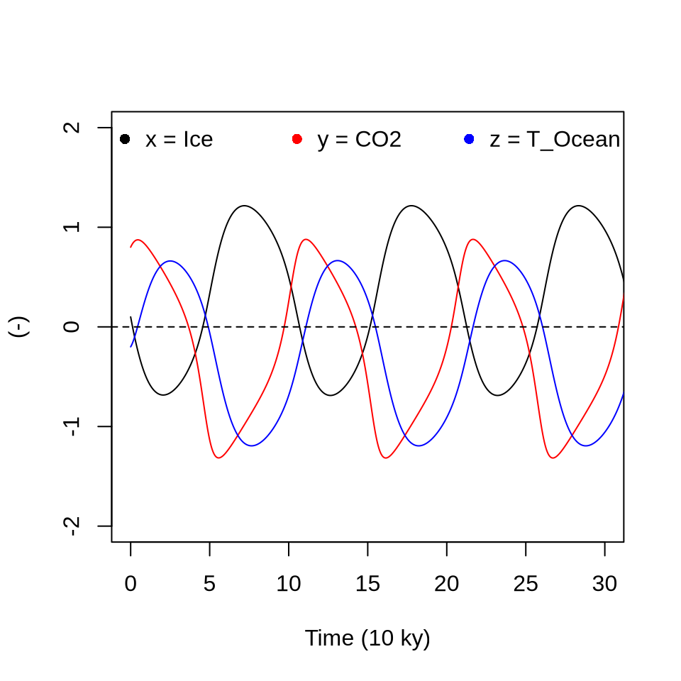
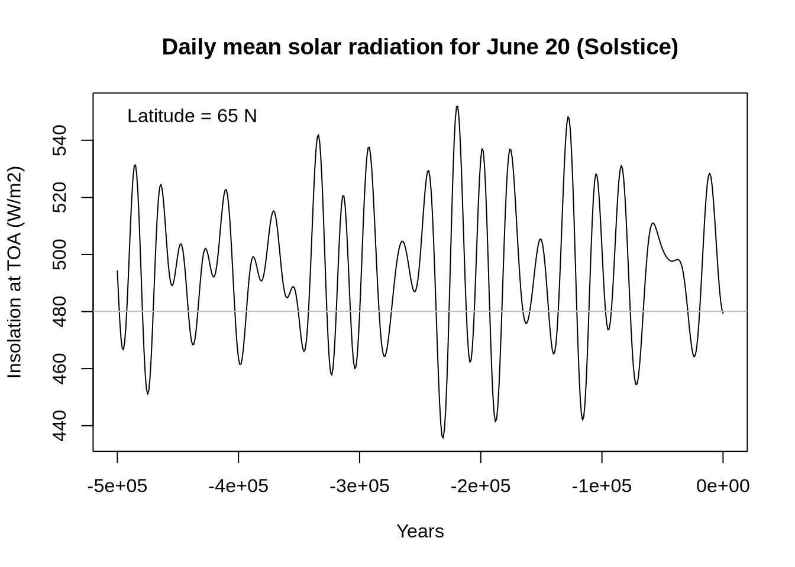
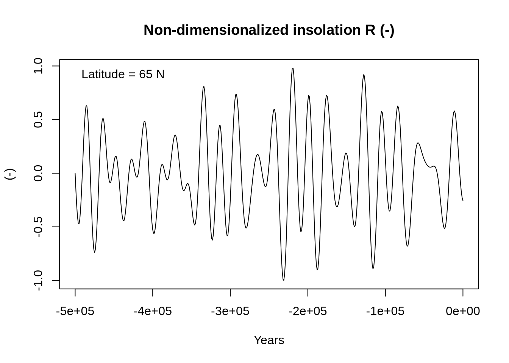
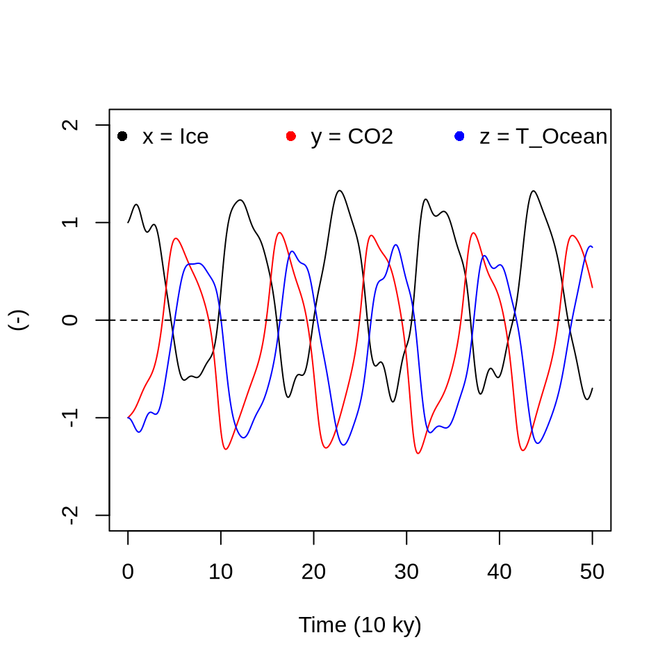

Chapter 4 Glacial Oscillations
Saltzman and Maasch (1990) (SM90) developed a conceptual model to simulate glacial cycles during the late Cenozoic era (300 kyr BCE). The ODEs below present the nondimensional form of the model, where \(x\), \(y\), and \(z\) are nondimensional variables representing global ice mass, atmospheric CO\(_2\) concentration, and deep ocean temperature, respectively:
\[ \frac{dx}{dt} = -x - y - vz, \] \[ \frac{dy}{dt} = - pz + ry - sy^2 - y^3, \] \[ \frac{dz}{dt} = -qx -qz, \] where \(p\) = 1, \(q\)= 2.5, \(r\) = 1.3, \(s\) = 0.6, and \(v\) = 0.2.
Note that this version of the model ignores changes in incoming solar radiation in response to the Milankovitch cycle and is intended for studying the internal oscillation of the system. Let us begin by plotting the free solution of the dynamical system.
# Load required package
library(deSolve)
# Define parameters (change these to explore different behavior)
p <- 1
q <- 2.5
r <- 1.3
s <- 0.6
v <- 0.2
# Define the system of ODEs
system <- function(t, state, parameters) {
x <- state[1]
y <- state[2]
z <- state[3]
dx <- -x - y - v * z
dy <- -p * z + r * y - s * y^2 - y^3
dz <- -q * (x + z)
list(c(dx, dy, dz))
}
# Initial conditions
initial_conditions <- c(0.1, 0.8, -0.2)
# Time span
dt <- 0.01
times <- seq(0, 100, by = dt)
# Solve ODEs for each initial condition
solutions <- ode(
y = initial_conditions,
times = times,
func = system,
parms = NULL,
method = "lsoda"
)
# Plot
df <- data.frame(solutions)
colnames(df) <- c("time", "x", "y", "z")
plot(
x = df$time,
y = df$x,
type = "l",
ylim = c(-2, 2),
ylab = "(-)",
xlab = "Time (10 ky)",
xlim = c(0, 30)
)
lines(x = df$time, df$y, col = "red")
lines(x = df$time, df$z, col = "blue")
abline(h = 0, lty = 2)
legend(
"top",
c("x = Ice", "y = CO2", "z = T_Ocean"),
col = c("black", "red", "blue"),
pch = 16,
bty = "n",
horiz = TRUE
)
Impact of Milankovitch cycle
library(palinsol)
year <- seq(from = -500000, to = 0, by = 1000)
latitude <- 65 * pi / 180 # (radians)
insolation <- function(times, astrosol = ber78) {
sapply(times, function(tt) Insol(orbit = astrosol(tt), long = pi / 2, lat = latitude))
}
# Daily mean incoming solar radiation at TOA (W/m2)
isl <- insolation(year, ber78)
# Normalized anomalies
isl.norm <- (isl - mean(isl)) / sd(isl)
my.min <- min(isl.norm)
my.max <- max(abs(isl.norm))
Rvec <- (isl.norm / my.max)
plot(year, isl,
typ = "l",
main = "Daily mean solar radiation for June 20 (Solstice)",
xlab = "Years",
ylab = "Insolation at TOA (W/m2)"
)
legend("topleft", paste("Latitude =", latitude * 180 / pi, "N"), bty = "n")
abline(h = 480.05, col = "grey")
plot(year, Rvec,
typ = "l",
main = "Non-dimensionalized insolation R (-)",
xlab = "Years",
ylab = "(-)"
)
legend("topleft", paste("Latitude =", latitude * 180 / pi, "N"), bty = "n")
Le
# Load required package
library(deSolve)
# Define parameters (change these to explore different behavior)
p <- 1
q <- 2.5
r <- 1.3
s <- 0.6
v <- 0.2
u <- 0.5
# Define the system of ODEs
system <- function(t, state, parameters) {
x <- state[1]
y <- state[2]
z <- state[3]
k <- floor(t / dt) + 1
Rt <- Rvec[k]
dx <- -x - y - v * z - u * Rt
dy <- -p * z + r * y - s * y^2 - y^3
dz <- -q * (x + z)
list(c(dx, dy, dz))
}
# Initial conditions
# initial_conditions <- c(0.1, 0.8, -0.2)
# initial_conditions <- c(0.5, -0.8, -0.2)
initial_conditions <- c(1, -1, -1)
# Time span
dt <- 1 / 10
times <- seq(0, 50, by = dt)
# Solve ODEs for each initial condition
solutions <- ode(
y = initial_conditions,
times = times,
func = system,
parms = NULL,
method = "lsoda"
)
# Plot
df <- data.frame(solutions)
colnames(df) <- c("time", "x", "y", "z")
plot(
x = df$time,
y = df$x,
type = "l",
ylim = c(-2, 2),
ylab = "(-)",
xlab = "Time (10 ky)",
xlim = c(0, 50)
)
lines(x = df$time, df$y, col = "red")
lines(x = df$time, df$z, col = "blue")
abline(h = 0, lty = 2)
legend(
"top",
c("x = Ice", "y = CO2", "z = T_Ocean"),
col = c("black", "red", "blue"),
pch = 16,
bty = "n",
horiz = TRUE
)